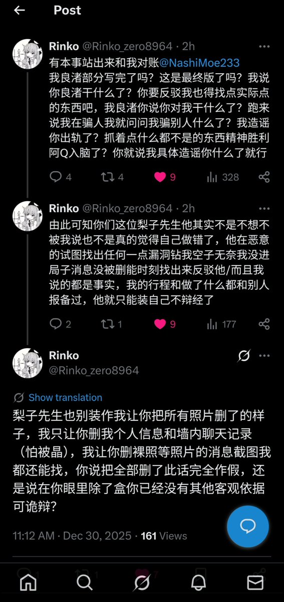

@SalviaSWC @Edward_8964 @NashiMoe233 @jzm1919810 我让他删的部分是“墙内所有记录”和“我个人身份信息”因为这个时候他被晶了缴叶子我怕和我扯上关系，在这之后我才要求他删掉我个人裸照照片，等于说一开始是我两互删记录，后面是我单方面让他删裸照，发生关系视频是没有的，只有裸照但是没有聊天记录，而且当时我也没想爆只想息事宁人


@Edward_8964 @NashiMoe233 @jzm1919810 看我补充的那张图片，个人根据时间顺序，推测性行为在此次事件中连导火索都算不上，就算性行为是梨子的全责，仍然存在很多疑点。
根据Rinko公布的信息，假如梨子强奸了rinko，那么被抓的是梨子，但rinko为什么害怕自己被晶，甚至叫对方把有关自己的聊天记录(其中很可能存在梨子强奸rinko的铁证)都删掉? https://t.co/QkSnMQ0P9I
根据Rinko公布的信息，假如梨子强奸了rinko，那么被抓的是梨子，但rinko为什么害怕自己被晶，甚至叫对方把有关自己的聊天记录(其中很可能存在梨子强奸rinko的铁证)都删掉? https://t.co/QkSnMQ0P9I